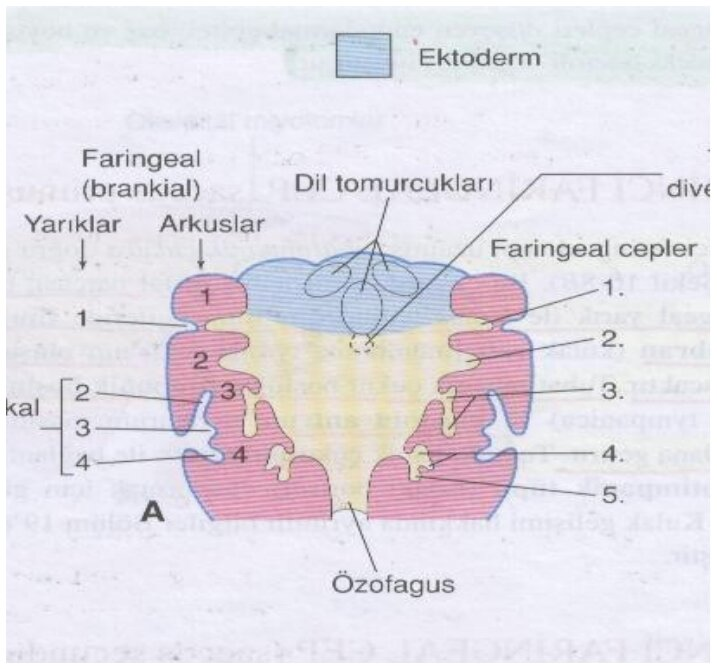
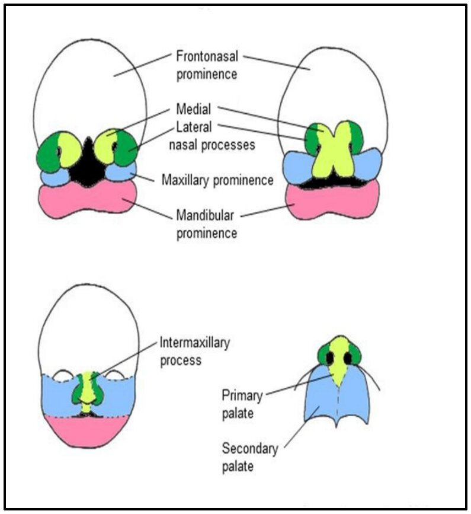

Bölüm 6 · Arcus pharyngei et facies
Bu bölümün dört çıkmış sorusunun hepsi aynı kalıptadır: bir yapı hangi arkustan, cepten ya da yarıktan gelişir? Timus 3. cepten, stapes 2. arkusun kıkırdağından, östaki borusu 1. cepten ve ultimobranşiyal cisim 4. (5.) cepten gelişir. Bölüm bu türevleri üç tabloda toplar, sonra anomalileri ve yüz çıkıntılarını anlatır.
Baş bölgesinin mezenşimi dört kaynaktan gelir. Paraksiyal mezoderm (somitler ve somitomerler) kafa tabanını, oksipital bölgenin küçük bir parçasını, kraniyofasiyal bölgenin bütün istemli kaslarını, başın arka kısmının deri ve bağ dokusunu ve ön beynin kaudalindeki meninksleri oluşturur. Lateral plak mezodermi sunuma göre laringeal kıkırdakların (aritenoid, krikoid) ve bölgenin bağ dokusunun kaynağıdır. Nöral krest ön, orta ve arka beyin bölgelerinden faringeal arkuslara ve yüze göç eder. Yüzün ortasının ve arkusların iskeletini, kıkırdak, kemik, dentin, tendon, deri bağ dokusu, pia ve araknoid mater, duyu nöronları ve bez stromasını oluşturur. Ektodermal plakodlar nöral krestle birlikte V., VII., IX. ve X. kraniyal sinirlerin duyu ganglionlarını meydana getirir.
Faringeal arkuslar 4. ve 5. haftalarda belirir. Her arkus dıştan yüzey ektodermi, içten endoderm kökenli epitel ve ortada mezenşimle örtülüdür. Her arkusun kendine ait bir kası, kraniyal siniri, arteri ve kıkırdağı vardır. Arkusların arasında dışta yarıklar (ektoderm), içte cepler (endoderm), yarık ile cebin karşılaştığı yerde membranlar bulunur. Bir kas sonradan başka bölgelere göç etse de sinirinden arkusu bulunur.
| Arkus | Kıkırdak ve kemik | Kaslar | Sinir |
|---|---|---|---|
| 1. (mandibular) | Maksiller çıkıntı: membranöz kemikleşmeyle maksilla, zigomatik kemik, temporal kemiğin bir bölümü. Mandibular çıkıntı: Meckel kıkırdağı. Kıkırdağın dorsal ucundan malleus ve inkus gelişir, geri kalanı kaybolur. Mandibula Meckel kıkırdağını saran mezenşimin intramembranöz kemikleşmesiyle oluşur. | Çiğneme kasları (temporalis, masseter, pterygoidler), m. digastricus'un ön karnı, m. mylohyoideus, m. tensor tympani, m. tensor veli palatini | N. trigeminus (V). Kasları yalnız mandibular dal (V3) innerve eder. Yüz derisinin duyusu V1, V2, V3. |
| 2. (hyoid) | Reichert kıkırdağı: stapes, proc. styloideus, lig. stylohyoideum, hyoidin küçük boynuzu ve gövdesinin üst kısmı | M. stapedius, m. stylohyoideus, m. digastricus'un arka karnı, kulak ve mimik kasları | N. facialis (VII) |
| 3. | Hyoidin gövdesinin alt kısmı ve büyük boynuzu | M. stylopharyngeus | N. glossopharyngeus (IX) |
| 4. ve 6. | Kaynaşarak epiglot hariç larinks kıkırdakları: tiroid, krikoid, aritenoid, kornikulat, kuneiform | 4: m. cricothyroideus, m. levator veli palatini, farinks konstriktörleri. 6: larinksin iç kasları. | N. vagus (X): 4. arkus n. laryngeus superior, 6. arkus n. laryngeus recurrens |
Arkus arterlerinin kalıntıları Bölüm 2.3'tedir: 3. arkus a. carotis communis, 4. arkus arcus aortae ve a. subclavia dextra, 6. arkus aa. pulmonales ve ductus arteriosus.
İnsan embriyosunda beş çift faringeal cep vardır. Sonuncusu atipiktir ve sıklıkla dördüncü cebin bir parçası kabul edilir. Cepler içten dışa, yarıklar dıştan içe doğru gelişir.
| Cep | Türevi |
|---|---|
| 1. | Distal bölümü genişleyerek orta kulak boşluğu (cavitas tympani), dar kalan proksimal bölümü tuba auditiva (östaki borusu) olur. |
| 2. | Epiteli mezenşime tomurcuklar hâlinde gömülür ve tonsilla palatinanın epitelini oluşturur. Tonsil 3.-5. aylarda lenfoid dokuyla dolar. Cebin kalıntısı fossa tonsillaris'tir. |
| 3. | Dorsal kanat → gl. parathyroidea inferior, ventral kanat → timus. İkisi birlikte aşağı göç eder. Paratiroid timustan ayrılınca tiroidin alt kutbunun arkasında kalır. |
| 4. | Dorsal kanat → gl. parathyroidea superior |
| 5. (4. cebin parçası sayılır) | Ultimobranşiyal cisim → tiroide katılır ve C hücrelerini (parafoliküler, kalsitonin) oluşturur. C hücrelerinin nöral krest kökenli olduğu ve ultimobranşiyal cisme göç ettiği kabul edilir. |

Yarıklar. 5. haftada dört yarık vardır, yalnız biri kalıcı yapıya katılır. Birinci yarığın dorsal parçası dış kulak yolunu oluşturur. Yolun dibindeki epitel kulak zarına katılır (birinci faringeal membran → kulak zarı). İkinci arkusun mezenşimi hızla çoğalır, 3. ve 4. arkusun üstünü örter ve boynun alt bölgesindeki epikardiyal sırtla kaynaşır. 2., 3. ve 4. yarıklar dış ortamla bağlantısını yitirir ve geçici olarak ektodermle döşeli servikal sinüsü oluşturur. Sinüs genellikle tamamen kaybolur. Kalıntısı kalırsa boyunda m. sternocleidomastoideus'un ön kenarı boyunca branşiyal (lateral servikal) kist ya da fistül gelişir.
Baş ve boyun anomalileri çoğunlukla faringeal kompleks erişkin yapılara dönüşürken ortaya çıkar. Yüz anomalilerinin çoğu 1. arkus elemanlarının anormal gelişmesinden kaynaklanır.
| Anomali | Mekanizma | Bulgular |
|---|---|---|
| 1. arkus sendromu | 4. haftada nöral krest hücrelerinin 1. arkusa yetersiz göçü | Göz, kulak, mandibula ve damak anomalileri |
| Treacher Collins sendromu | Otozomal dominant, 1. arkus | Malar hipoplazi (zigomatik kemik az gelişmiş), aşağı eğimli göz kapağı yarıkları, alt göz kapağı bozuklukları, deforme dış kulak, bazen orta ve iç kulak anomalileri |
| Pierre Robin sekansı | 1. arkus, mandibula hipoplazisi ile başlar | Mikrognati, yarık damak, glossoptozis (dilin arkaya düşmesi), göz-kulak bozuklukları |
| DiGeorge sendromu | 22q11 delesyonu, 3. ve 4. ceplerin timus ve paratiroidlere farklanamaması | Timus aplazisi (T hücre eksikliği, enfeksiyonlara aşırı duyarlılık), paratiroid yokluğu (hipokalsemi, tetani), balık ağzı görünümlü kısa filtrumlu dudak, aşağıda ve çentikli kulaklar, nazal yarıklar, tiroid hipoplazisi, kalp ve arkus aorta anomalileri (nöral krest göçü bozuk) |
Yüz esas olarak 4.-8. haftalar arasında gelişir. Embriyonik dönemin sonunda yüz insan yüzü özelliklerini kazanır. Mandibula ve alt dudak ilk oluşan yüz kısımlarıdır. 4. haftanın başında stomodeumun çevresinde beş yüz çıkıntısı belirir: tek frontonazal, çift maksiller ve çift mandibular çıkıntı. Çift çıkıntılar 1. faringeal arkustan gelir ve arkuslara göç eden nöral krest hücrelerinin çoğalmasıyla oluşur. 4. haftanın sonunda frontonazal çıkıntıda yüzey ektodermi kalınlaşarak iki nazal plak oluşturur. Plakların kenarındaki mezenşim çoğalarak medial ve lateral nazal çıkıntıları yapar. Plağın ortası çökerek nazal çukuru oluşturur. İki medial nazal çıkıntı orta hatta birleşerek intermaksiller segmenti oluşturur.
| Çıkıntı | Oluşturduğu yapı |
|---|---|
| Frontonazal | Alın, burun kökü (kemeri), medial ve lateral nazal çıkıntılar |
| Maksiller | Yanaklar, üst dudağın lateral kısımları |
| Medial nazal | Üst dudağın filtrumu, burnun sırtı ve ucu. İntermaksiller segmentten filtrum, premaksilla ile ona ait diş eti ve primer damak. |
| Lateral nazal | Burun kanatları |
| Mandibular | Alt dudak ve çene |

Şekil 6.2 — Yüz çıkıntıları. Üstte 5. ve 6. haftalarda frontonazal (beyaz), medial ve lateral nazal (yeşil), maksiller (mavi) ve mandibular (pembe) çıkıntılar. Altta medial nazal çıkıntıların birleşmesiyle oluşan intermaksiller segment ve ondan gelişen primer damak, maksiller çıkıntılardan gelişen sekonder damak.
Maksiller çıkıntılar medial nazal çıkıntılarla 7. haftada kaynaşır. Bu kaynaşma olmazsa yarık dudak gelişir. Maksiller çıkıntılardan gelişen palatal rafların (sekonder damak) birbiriyle ya da primer damakla kaynaşmaması yarık damaka yol açar.
Doğru: A. Timusun epitelyal retiküler hücreleri 3. faringeal cebin ventral kanadının endoderminden gelişir. Aynı cebin dorsal kanadı alt paratiroid bezini oluşturur.
B ve E yanlış: membranlardan yalnız birincisi kalıcıdır ve kulak zarına katılır. C yanlış: 1. cep orta kulak ve östaki borusunu oluşturur. D yanlış: 5. cep ultimobranşiyal cismi oluşturur.
Doğru: B. Stapes 2. arkusun kıkırdağı olan Reichert kıkırdağından gelişir. Kası m. stapedius da 2. arkustandır ve n. facialis ile innerve edilir.
A yanlış: 1. arkusun Meckel kıkırdağı öbür iki kemikçiği, malleus ve inkusu oluşturur. C yanlış: 5. arkus geriler, kalıcı türevi yoktur. D yanlış: 3. arkus hyoidin büyük boynuzunu oluşturur. E yanlış: 3. yarık servikal sinüse katılır ve kaybolur.
Doğru: D. Birinci faringeal cebin distal bölümü genişleyerek orta kulak boşluğunu, dar kalan proksimal bölümü tuba auditiva'yı oluşturur. Bu yüzden östaki borusu endodermle döşelidir.
A ve B yanlış: arkuslar kıkırdak, kas ve sinir türevleri verir, epitelle döşeli bir kanal oluşturmaz. C yanlış: 2. cep tonsilla palatina'yı oluşturur. E yanlış: 2. yarık servikal sinüse katılır ve kaybolur.
Doğru: C. Ultimobranşiyal cisim beşinci faringeal cepten gelişir. Beşinci cep dördüncü cebin bir parçası kabul edildiği için şıklarda doğru seçenek dördüncü faringeal cep olarak verilmiştir. Cisim tiroide katılarak kalsitonin salgılayan C hücrelerini oluşturur.
A ve D yanlış: arkuslar endodermal bez türevleri vermez. B ve E yanlış: yarıklar ektodermdir ve 1. yarık dışında servikal sinüse katılıp kaybolur.
Doğru: E. DiGeorge sendromunda (22q11 delesyonu) 3. ve 4. cepler timusa ve paratiroidlere farklanamaz. Paratiroid yokluğu hipokalsemiye, timus aplazisi T hücre eksikliğine ve viral ile mantar enfeksiyonlarına yol açar. Nöral krest göçü de bozulduğu için konotrunkal kalp anomalileri sıktır.
A ve B yanlış: bu iki sendrom yüz ve çene anomalileriyle belirir, bağışıklık ve kalsiyum bozukluğu yapmaz. C yanlış: branşiyal kist boyunda yumuşak bir kitledir. D yanlış: Kartagener solunum yolu enfeksiyonları ve situs inversus yapar, hipokalsemi yapmaz.
Doğru: B. İki medial nazal çıkıntı orta hatta birleşerek intermaksiller segmenti oluşturur. Bu segmentten filtrum, premaksilla ve primer damak gelişir.
A yanlış: maksiller çıkıntı yanakları, üst dudağın lateral kısımlarını ve sekonder damağı oluşturur. C yanlış: lateral nazal çıkıntı burun kanatlarını oluşturur. D yanlış: mandibular çıkıntı alt dudak ve çeneyi oluşturur. E yanlış: frontonazal çıkıntının frontal kısmı alnı oluşturur.
Doğru: D. M. tensor tympani 1. arkusun kasıdır ve V3 ile innerve edilir. Aynı arkustan çiğneme kasları, digastrik ön karın, mylohyoid ve tensor veli palatini de gelişir.
A ve C yanlış: m. stapedius ve digastrik arka karın 2. arkusun kaslarıdır (n. facialis). Orta kulaktaki iki kasın kökeni farklıdır: tensor tympani 1., stapedius 2. arkustandır. B yanlış: m. stylopharyngeus 3. arkusun tek kasıdır (IX). E yanlış: m. cricothyroideus 4. arkustandır (n. laryngeus superior).